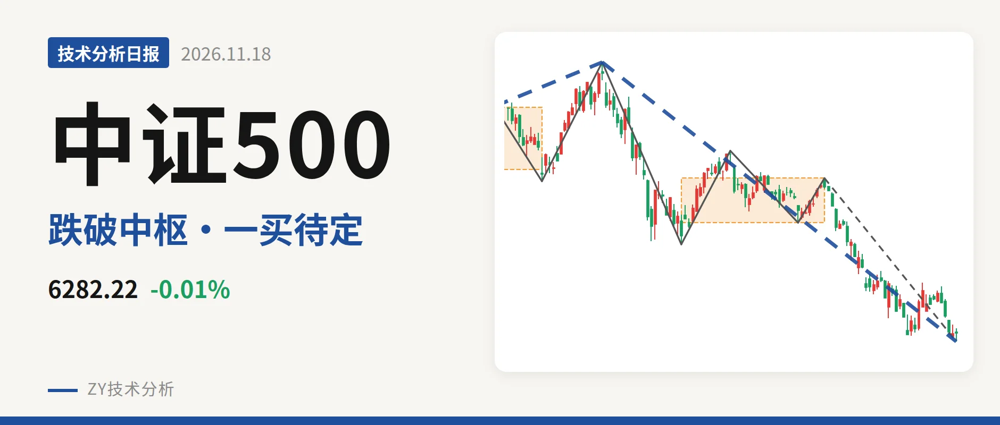
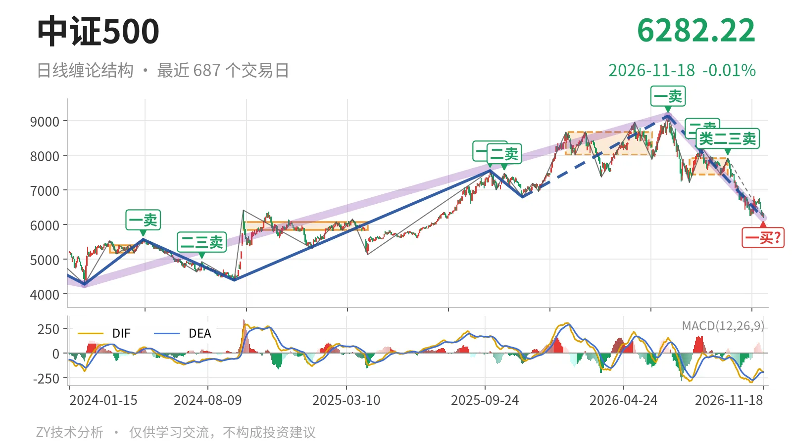
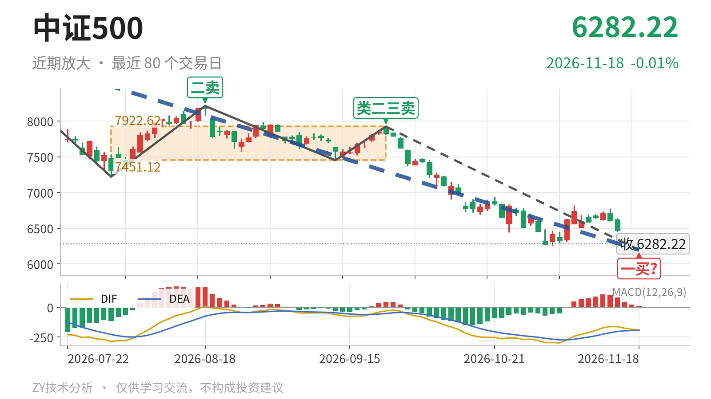

中证500｜破位7451点中枢下沿

最近日线中枢 7451.12—7922.62点，收盘位于中枢之下
一句话：日线下跌段未结束，收盘6282点贴住6263点线段中枢上沿
📉 走势结构：更大级别上涨后的回撤，日线下跌段仍在延续
当前不是中枢震荡，而是7月1日以来的日线下跌线段延续。2024年2月5日至2026年7月1日的上涨走势从4281.24点涨到9147.56点，涨幅约113.7%；7月1日至11月18日已跌约32.3%。日线线段上，7月1日至11月18日这段内部有5笔，仍未结束。2025年11月24日至2026年7月1日的上涨线段被这笔下跌击穿，线段级别三买6797.50点也已跌破，向上离开没有成立。

🧭 中枢与位置：跌破最近中枢，中轴下移
最新收盘6282.22点落在7月30日至9月22日中枢7451.12—7922.62点下方，低于下沿约15.7%。中枢并非一次下移：1月26日至6月8日中枢为8014.66—8671.35点，中轴8343点附近；7月30日至9月22日中枢中轴已降到7686.87点，现在价格更在其下。下方只剩2022年4月27日至2023年8月4日线段中枢上沿6263.16点，收盘距此仅约19点。
🔻 买卖点：卖点一个比一个低，一买暂定
日线笔级别卖点从7月1日一卖9147.56点，到8月18日二卖8211.31点，再到9月22日类二三卖7922.62点，位置逐级降低，说明下跌段内部反弹一次弱于一次。11月18日一买6194.85点只是暂定的一买，因为9月22日至11月18日下跌笔还在延续，低点可能随笔的延续而改写。线段级别上，2025年11月24日三买6797.50点已经被跌破，该三买后的向上线段没有走出趋势，只对应更小级别。

📊 背驰：下跌笔面积放大，没有底背驰
最近一组可比的下跌笔，是8月18日至9月11日与9月22日以来的两段。前一段绿柱面积123，DIF低点-61.4；后一段价格从7922.62点跌到6194.85点，绿柱面积1835，DIF低点-298.6。价格新低、绿柱面积放大、DIF低点同步新低，不是“新低不新弱”。最新DIF为-189.1，仍在零轴下方，9月22日以来的下跌笔也还在延续，因此当前看不到日线级别底背驰。
🔎 关键位置观察：7451点先看反抽，6263点定级别
结构偏弱，弱在收盘跌破最近中枢且下跌笔没有底背驰。反抽若回不到7451点上方，对7月30日至9月22日中枢仍属三卖结构，日线下跌段难以结束。若11月18日低点6194.85点继续被跌破，则9月22日以来的日线下跌笔延续，暂定一买只对应更小级别反弹。重新站上7451点，本轮下跌才更可能转为中枢扩展而非单边延续；下方6263点一线是线段中枢上沿，一旦跌回5594.30—6263.16点内部，调整级别会进一步扩大。
⚠️ 本文为基于公开行情数据的缠论技术结构记录，由程序自动计算并生成，仅供学习交流，不构成任何投资建议。市场有风险，投资需谨慎。